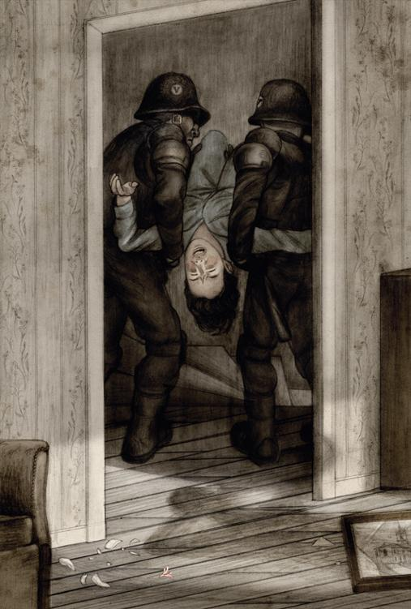

十
温斯顿醒来时，感觉好像睡了好久，但看看那个老式钟，才二十点三十分。他打了一会儿盹。院子里又有熟悉的歌声传来，中气充沛极了。
本来不存希望，
心事化作春泥。
谁人巧言令色，
使我意马难收？
这懒洋洋的调儿一直大受欢迎，历久不衰，不像《天仇》那么短命。朱丽亚闻声而起，伸了个舒服的懒腰后就起床。
“肚子饿了，”她说，“我们做些咖啡吧！妈的，煤油炉熄了，水也冷了。”说着，她把煤油炉拿起来摇了摇，“油也烧完了。”
“大概可问查林顿先生要一点吧。”
“奇怪的是，我上床之前还是满满的。我先穿了衣服吧，有点冷了。”
温斯顿亦跟着起床，穿上衣服。院子里的歌声又飘到耳边来：
谁说时光最能疗创，
谁说旧仇转眼遗忘，
旧时笑声泪影，
历历在我心上。
温斯顿一面扣着制服的腰带，一面走到窗前。太阳一定沉在屋子后面了，院子里再没有阳光。石板路湿湿的，好像刚洗擦过一样。天空也是刚洗擦过吧，温斯顿想。你看，烟囱管帽之间的那片蓝，多柔和明朗！女歌手来回踱着，时唱时停，一块又一块地悬着尿布，一点没有疲倦的样子。温斯顿搞不清她是靠洗衣服维生的呢，还是二三十个孙子的奴隶。朱丽亚已站在他旁边，他们一起出神地看着院子内那个大块头。他遥望着这女人惯有的动作，她举着浑圆的手臂够上晒衣绳，牝马似的屁股翘得高高的。他第一次感觉到，这女人好美。他生平没有想过，一个年逾五十女人的身体，先因生儿育女而变得臃肿，后又因工作需要而受风吹雨打——居然还能看出美来。但既然他觉得这是美，那又有什么不对？这个结实如花岗石、皮肤发红的身体，也有过含苞待放的日子。如果少女的身体如玫瑰花，那么她就是蔷薇果，为什么她要受歧视？
“她真美。”他说。
“她的屁股少说也有一米宽。”朱丽亚说。
“这就是她美的特色。”
他轻搂着朱丽亚柔软的腰身。从臀部到膝盖，她半边身体紧紧地靠着他。他们两人合过体，但注定不能有儿女。这是他们绝不可以做的事，他们只能靠口信、靠心灵的相通传递这个秘密。院子里那歌手没有头脑，只有肌肉发达的躯壳、仁慈的心肠和多产的肚皮，他真想知道她究竟生了多少个儿女。少说也有十五个吧？她有过如春花灿烂的短暂时光，说不定有过一年娇艳如野玫瑰的日子。后来呢，突然发胖得有如施肥培养出来的果实，变得粗陋不堪。以后的生活就是在洗衣烧饭、擦地板、缝缝补补的日子中度过的。先替儿女做牛马，后来又替儿女的儿女做牛马，三十余年如一日，而她的歌声由头到尾没停过。温斯顿对她产生的一种神秘的虔诚感，渐渐竟然与烟囱管帽后面万里无云的天空混在一起了。大家都以为天空到处都是一样的，在欧亚国和东亚国如此，在大洋邦亦如此。而在日光底下生活的人，也是大同小异的。普天之下，千万百万的人民就像在大洋邦一样，对别的同类的生活一无所知，为仇恨与谎言所隔离。但亦正如大洋邦的国民一样，尽管他们无知、不会思考，他们的心中和身体中却蕴藏着有朝一日可以改变世界的力量。如果还有希望，得寄托于无产者身上！他虽没有把那本书看完，但他猜想到这一定是戈斯坦最后的意思了。未来是属于无产者的。但他又怎么知道，无产者将来创造的世界不会像党所创造的世界一样让他感觉陌生？可能的，但最少那不会是个疯狂的世界。有真正平等的地方就不会有疯狂现象出现。力量最后变为理性，这是早晚要发生的事。无产者是不朽的，你只要看看院子内那勇者的形象就会深信不疑。他们觉醒的时日一定会到来。在此以前，虽然说不定要等一千年，他们会像鸟兽一样在各种逆境中生存，一个传一个地把党不能分享也不能消灭的原始精力遗传下去。
“你还记不记得我们幽会的第一天，那只在林边对着我们唱歌的画眉？”他问。
“它才不是对着我们唱歌呢，”朱丽亚说，“它是给自己唱歌。可能这也不对，它为唱歌而唱歌就是。”
鸟唱歌，无产者唱歌，就是党员不唱歌。在伦敦，在纽约，在非洲，在巴西，在神秘的边境以外的禁地，在巴黎和柏林的街道上，在无边无际俄国平原的村落里，在中国和日本的市集上——在全世界各地你都可以看到同样一个不可征服的无产者母亲结结实实地站着，虽因生儿育女和苦工的折磨而变得体态粗大，却一直歌唱下去。有觉醒性的一代一定是从这种强健的腰身诞生出来的。你已经死去，未来是他们的。但你若能像无产者保持身体一样保持精神，传递二加二等于四的真理，那么这个未来你一样可以参与。
“我们已经死了。”他说。
“我们已经死了。”朱丽亚漫应着。
“你们已经死了。”一个声音在他们后面冷冷地说。
他们马上跳开。温斯顿感到自己的心肝胆肺一下子化成冰雪。他看到朱丽亚眼角泛白，脸色变得奶黄，脸颊上残余的胭脂还在，吊得高高的，好像要脱离脸上的皮肤升起的样子。
“你们已经死了。”那个像铁石一样冰冷的声音重复一次说。
“在图画后面。”朱丽亚轻轻地说。
“在图画后面。”那个声音和着说，“站着别动，听候命令。”
大限终于到了。除了你眼望我眼，一筹莫展。他们连想也没想过要在别人出现前逃命。抗拒墙后的铁石声音是不可想象的事。咔嚓一声，好像是门把转动，接着就是玻璃坠地的声音。画框掉下来了，后面原来是电幕。
“现在他们可以看到我们了。”朱丽亚说。
“现在我们可以看到你们了。”那声音说，“站到房中间来，背对背，手叉在脑后，你们谁都不要碰谁。”
他们的身体没有接触，但温斯顿好像感觉到朱丽亚身子发抖，或者说不定自己在发抖。他勉强可以忍着不让牙齿打战，但两条腿却不由自主。楼下屋子内有皮靴踩踏的响声，院子里好像来了不少人。他听到有重物被拖过石板地的声音，妇人的歌声戛然停止。接着有一阵长长的好像是东西滚动的声音，似乎是洗衣盆被人一脚踢翻滚过庭院的样子。怒骂申斥的声响四起，一阵痛苦的呼喊过后，声音就停止了。
“屋子四面被包围了。”温斯顿说。
“屋子四面被包围了。”铁石声音说。
他听到朱丽亚磨牙的声音。“我们干脆就在这里说再见吧。”她说。
“你们干脆就在这里说再见吧。”那个声音说。接着一个不同的声音响起，这声音有点单薄，但相当文雅，温斯顿好像以前听过。这个新出现的声音说：“对了，既然话已经说开了——‘这是亮你床头的蜡烛，那是断你人头的砍刀！’还记得吗？”
有东西掉到温斯顿背后的床上来。一张梯子的前端已破窗而入，有人爬上来。一下子房间里就站满了身穿黑制服、足登镶铁皮靴、手执警棍的彪形大汉。
温斯顿已经不发抖了，眼睛也不转动游移。此时别忘记这一点：规规矩矩地站着，别给他们揍你的借口。站在他面前的就是一个下颚长得像职业拳师模样的汉子，拇指与食指间扭着警棍，等的就是显身手的机会。温斯顿看了他一眼。手叉在脑后，身体完全外露，这种感觉真像赤条条的，很不好受。那汉子伸出舌尖，舐了舐嘴唇，就走过去了。又有一声爆裂声，原来其中一个汉子捡起玻璃镇纸掷到壁炉的墙壁上去。
一块珊瑚的碎片，脆弱得像蛋糕上面糖制的粉红色玫瑰蓓蕾，在地板上滚动。这东西原来一直是这么渺小的吗？温斯顿想。他听到后面砰的一响，接着是“哇”的一声叫喊，而自己的足踝此时被人重重地踢了一脚，几乎使他失去了平衡而倒下来。朱丽亚的太阳穴被一个汉子擂了一记，痛得她弯下腰来，最后倒在地上，拼命地舞动手足，喘着气。温斯顿不敢转头看她，但她苍白的脸和喘气的样子好像就在他面前出现。他自己虽然惧怕得不得了，但朱丽亚承受的痛楚，他真的感同身受。痛苦当然难受，但朱丽亚目前马上要做的，是把呼吸恢复过来。两个汉子分别扳着她的腿和肩膀，然后像扛面粉袋一样扛了她出去。温斯顿侧眼看到她翻过来的脸蜡黄而微带痉挛，眼睛紧闭，颊上残留的脂粉犹在。这是最后的一瞥了。

他木然站着，还未挨打。一些毫无意义的思想不由自主地浮现于脑际。不知查林顿先生有没有落网？院子里唱歌的无产者母亲呢？不知他们怎样对付她？他小便急得不得了，也真怪，两三个钟头前才上过厕所。壁炉上的钟指着九点，那就是说二十一点。为什么天还没黑呢？八月的晚上到了二十一点应该黑了。是不是他和朱丽亚都把时间搞错了，一睡睡了一夜，还以为是二十点三十分，其实已是第二天早上的八点三十分。可是他不想推想下去了，一点意思都没有。
走道上传来轻快的脚步声。查林顿先生进来了，黑制服汉子的态度马上变得恭顺起来。查林顿先生的外表亦有转变，他的目光落在击得粉碎的玻璃镇纸上。
“把碎片捡起来。”他用命令的口吻说。
一个汉子应命俯身收拾。查林顿先生说话时再无浓重的伦敦口音。呀，这就是他刚才在电幕后听到的文雅口音！查林顿先生仍穿着旧天鹅绒外衣，但原来斑白的头发现在已变成黑色。对，他的眼镜也不见了。他目光凌厉地打量了温斯顿一眼，好像对他说“你没看错人”，然后没再理会他了。查林顿先生的外貌虽然还可辨识，但事实上等于换了一个人，身体站得挺直，连个子看来也比以前高大。他的脸整容的部分不多，但给人的观感却大大不同。原来浓浓黑黑的眉毛现在变得疏淡，皱纹不见了，因此整张脸的线条也随着改变。连鼻子也不那么像鹰钩状了。现在的查林顿先生是个年约三十五岁、冷静而警觉的人。温斯顿突然想到，这是他这辈子第一次正眼看到一个表明了身份的思想警察。